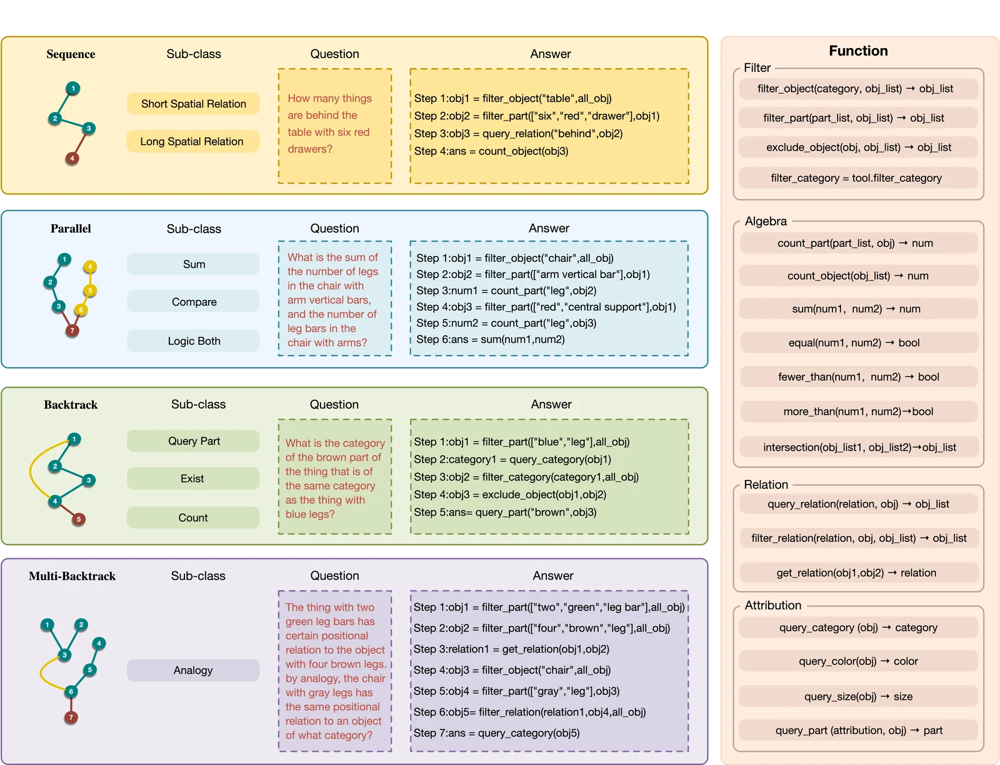

ToT-One-Stop
Propose all remaining steps at an eligible search node. If the plan fails validation, resume search one step at a time.
arXiv 2023 · * Equal contribution
Tree-of-Mixed-Thought plans how to answer a visual question by combining quick proposals for several reasoning steps with depth-first search that checks and revises the plan.
Propose all remaining steps at an eligible search node. If the plan fails validation, resume search one step at a time.
Propose a fixed number of steps per node, reducing the depth of the search needed to build a complete plan.
Both methods check whether the proposed tools can run with the specified arguments and whether those arguments match objects and attributes in the scene graph.
The benchmark groups nine question types from PTR and CLEVR by sequential reasoning, parallel reasoning, backtracking and multiple backtracks. It uses 100 test questions per type and provides scene-graph tools for object attributes, spatial relations and counting.

Takeaway ToT-One-Stop used fewer search steps in all nine question types and improved accuracy in eight. On long spatial relations, accuracy fell from 56% to 53% as search steps dropped from 15.90 to 9.63.
| Question type | One-Stop | Tree-of-Thought | ToT-One-Stop | ToT-Block |
|---|---|---|---|---|
| Short spatial relation | 39.33% | 52.66% · 5.48 | 56.66% · 3.04 | 59.33% · 3.30 |
| Long spatial relation | 7.66% | 56.00% · 15.90 | 53.00% · 9.63 | 55.00% · 10.49 |
| Sum | 86.00% | 98.66% · 6.39 | 100.00% · 2.47 | 93.44% · 3.22 |
| Compare | 52.00% | 59.66% · 6.91 | 63.00% · 2.39 | 59.00% · 3.89 |
| Logic | 31.00% | 65.00% · 12.81 | 69.00% · 5.50 | 70.66% · 7.67 |
| Query part | 74.00% | 77.00% · 5.06 | 78.66% · 2.08 | 78.33% · 3.12 |
| Exist | 53.00% | 82.00% · 7.58 | 90.33% · 4.40 | 86.33% · 5.25 |
| Count | 72.66% | 85.66% · 8.25 | 90.00% · 3.77 | 92.00% · 5.13 |
| Analogy | 70.33% | 89.66% · 8.57 | 93.00% · 3.12 | 92.33% · 4.37 |